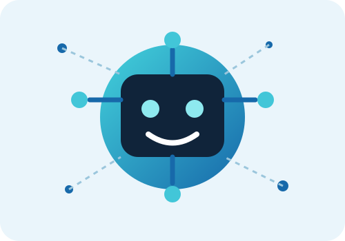

IA simbólica
Representa el conocimiento mediante símbolos, reglas y hechos definidos por personas. Sigue reglas lógicas para resolver problemas.
Ejemplo:Un programa experto que recomienda una solución aplicando reglas previamente establecidas.
Conceptos, paradigmas, tipos y reflexión sobre el uso ético de la IA.
La inteligencia artificial (IA) es una rama de la informática que desarrolla sistemas capaces de realizar tareas que normalmente requieren capacidades humanas, como reconocer imágenes, comprender lenguaje, aprender de datos e identificar patrones.
La IA funciona mediante programas y modelos que procesan información. Sus resultados dependen de los datos, del diseño y de la supervisión con que se utilice.

Representa el conocimiento mediante símbolos, reglas y hechos definidos por personas. Sigue reglas lógicas para resolver problemas.
Ejemplo:Un programa experto que recomienda una solución aplicando reglas previamente establecidas.
Aprende patrones a partir de datos mediante modelos matemáticos, como redes neuronales y aprendizaje automático.
Ejemplo:Un sistema que aprende a reconocer fotografías de perros y gatos.
| Tipo | Descripción | Ejemplo |
|---|---|---|
| IA estrecha | Está diseñada para realizar tareas específicas. | Traductores y asistentes virtuales. |
| IA general | Sería capaz de aprender y resolver muchas tareas intelectuales de forma flexible. Aún no existe como tecnología comprobada. | Es una posibilidad hipotética. |
| Reactiva | Responde a la situación presente sin guardar experiencias. | Un programa de ajedrez básico. |
| Memoria limitada | Utiliza información reciente o histórica para producir una respuesta. | Algunos sistemas de asistencia a la conducción. |
Proteger los datos personales y pedir autorización para utilizarlos.
Explicar, cuando sea posible, cómo se producen las decisiones automatizadas.
Las decisiones importantes deben poder ser revisadas por personas responsables.